本資料の背景となる決定・要望・未決事項
以下は会議録画・議事録から、NMNの3袋化、広告、CR、KPIに関係する内容を抽出した事実サマリー。後続の「山下の解釈」「今後の方針案」と分けて読む。
決定・経営前提
- 3袋化は免疫センター単体の広告施策ではなく、利益確保を目的とする全社方針。
- 制作は9月中の完了、10月5日週からの切り替え予定として会議上共有。
- 1年LTVは、山田養蜂場内の参考データで1袋コースより3袋コースが約140〜150％という補足があった。
- 最上位で見るべきKPIは売上。その下に新規獲得数とリピートを置く認識で合意。
田村様からの広告・CR要望
- 新規獲得数、購入単価、リピート率を重視。
- 他社で売れている表現の横滑りや、テクニカルに見える広告への懸念。
- 「免疫分析研究センターらしさ」「機能性」「続けて健康になってもらう文脈」をCRに求める。
- 9月以降、CVをどう改善し、価値あるCRをどう作るか具体方針を求められた。
3袋化に伴うKPI・評価上の未決事項
- 目標CPOは5万円、6万円超は避けるライン。現行リピート率を入れ、2年後採算を前提に算出。
- 3袋は次回判断が4か月目になるため、従来の1袋と同じリピート評価ができない。
- 新規獲得件数は、売上5億円との関係から再設定が必要。
- CR別リピート、停止条件、3袋導入後の短期代替指標は未確定。
- 9月中旬からの準備・先行運用案と、会議共有の10月5日週切り替え予定を整合させる必要がある。
- リピート顧客の年齢・目的・効果実感など、継続者像の分析が必要。
会議で持ち帰ったアクション
- 山下：売上を最上位に置いたKPI再設定とリプランを作り、来週定例または事前に提案。
- 山下／博報堂チーム：横に広げすぎたCRを見直し、勝ちパターンと「らしさ」の具体案を整理。
- 上田様：3袋段階運用プラン、実装条件、リピート顧客属性の分析を共有。
- 石川（MD PMO）：山下の方針を受け、渡邉と広告改善の詳細数値・現場アクションを整理。
- 今週：提案に不足するデータ・根拠・制作条件を収集し、3袋制作スケジュールを組む。
注：発言は逐語録ではなく、会議録画・自動議事録をもとに提案検討に必要な範囲で要約。数値・スケジュールは最終提案前に得意先共有資料と再照合する。
「提案側で正解を作る」から、「顧客と仮説を育てる」へ
以下は、これまでのプロンプトから推察した山下のスタンス変化。成果への誠実さは変えず、正解の作り方をチーム型へ更新する、という自己整理である。
起きていたこと
完成CRへの感想を、次の代案で解消。対象者・買わない理由・不足した証拠を言語化しきれなかった。
未定義だったこと
生活者にとって「研究品質」が、純度・製造・分析・開発主体のどれを意味するか。
今後の変え方
お戻しを評価で終わらせず、理由を問い、EC市場の選択基準と照合してから企画案へ戻す。
提案側が全体を統合し、売れる答えを守る
- 売上が成立してこそ、ブランド便益の認識も広がる
- 「らしさ」だけで獲得可能性を狭めないよう、改善余地を確保する
- 基準・データ・計測が不足する中でも、提案側で打ち手を組み上げる
- Paidの判断速度と予算を守るため、同じ数字を同時に見る状態を求める
役割を明確にし、共同で勝ち筋を学ぶ
- 売上目標は共有しつつ、MD・博報堂は達成をアシストする
- 「らしさ」はブランド核として固定し、買う理由への翻訳を段階的に磨く
- 上田様を起点に、顧客・商品・社内の知見を仮説として受け取る
- 制作・デザイン・Paidが直接参加し、市場結果を次の仮説へ戻す
変えない軸
成果に誠実であること、曖昧な前提のまま成果を約束しないこと、数字で学習すること。
変える方法
代理店だけで新しいコピーの正解を作らず、得意先の知見と費用統制された市場反応を往復させる。
注：「これまで／これから」は個人の評価ではなく、本資料作成過程のプロンプトから推察した提案スタンスの変化。チーム内で表現を確認する。
「どのCRが売れたか」と「田村様が何を評価するか」を分けて見る
8月25日週報で商材・媒体単位の現在地を確認し、8月18日クリエイティブレポートで個別CRの画像・CV・CPOを補足する。数字は実績として扱う一方、表現が成果を生んだ因果と田村様との適合は仮説として分けて読む。
いまCVが取れ、CPOも目標内にあるCR
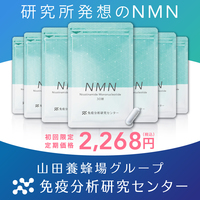
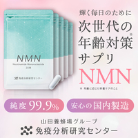
週報から言える好調方向
- 商品特性×オファーの新バナー
- 粒のみ、粒持ち、パッケージ横並び
- 「老化度測定キット」を主コピーにした表現
- キットとNMNパッケージのセット訴求
- 青以外の色調でもCVが出始めている
このデータだけでは言えないこと
- 同一条件下でのコピー・色・ビジュアルの純粋差
- CR別の3袋選択率・初期キャンセル・リピート率
- 8月18日以降も同じ効率が継続しているか
- 田村様が個々の配信CRを承認するか否か
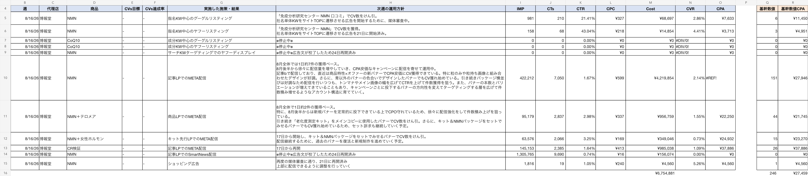
田村様の評価軸との適合仮説
提案の立ち位置と、CR案
3袋3か月化は、今年度利益を確保するための事業モデル変更。一方、CRには「らしさ」と獲得・継続が同時に求められている。本資料は、この衝突を個人の意見対立にせず、ブランド核・共同仮説・計測・週次運営・実装工程の問題として解き直す。
売れる翻訳は市場から学ぶ。
売上と継続の目標達成を、判断材料・実行・改善の質でアシストする。推奨スタンス：ブランド起点・段階改善型／目標達成アシスト
固定する
研究機関発／継続する健康設計／誠実で過度に煽らない姿勢。
翻訳する
生活者の関心・生活場面・便益へ、複数の言葉と表現で置き換える。
市場で学ぶ
購買・3袋選択・キャンセル予兆まで見て、勝つ翻訳へ集中する。
大きな経営成果から、小さな広告診断へ順番に考える
年度経営KPI
年度利益 → LTV・回収 → 必要顧客数・継続 → 認知・需要 → CR／媒体改善
下位KPIは上位KPIを説明・改善するために使い、下位KPI単独で事業判断をしない。
事業責任者に先に示すもの
- 売上・粗利の現状案／修正案
- 3袋獲得の必要件数と投資額
- CPO5万円の回収見込み
- 獲得減少時でも利益を守れる条件
その後に説明するもの
- 認知・獲得・継続の測定方法
- CR別の翻訳仮説
- 配信の停止・改善・増額条件
- 制作と実装スケジュール
今回の議論が起きている構造と、提案で解くべきこと
全商品を3袋化
変更自体は決定事項。初回単価上昇による獲得減少リスクが発生。
集中したい
テクニカルな獲得が継続につながらないのでは、という仮説。
「らしい表現」が二者択一に見える
停止条件がなく、CR別リピートも未確認。獲得と継続の間に認知評価もないため、双方の主張を同じ物差しで比較できない。
つなぐ測定設計
広告想起、指名検索、CPO、3袋選択、F2、累積売上を接続する。
売れる翻訳へ段階改善する
Better／Best、二段階判定、時間軸別停止条件で合意する。
提案で決める4つの論点
チームから顧客提案までの判断順序
今週｜事実を揃える
承認CR、CR別獲得、継続顧客、3袋条件、制作要件を収集。
チーム｜方針を決める
Bestを推奨するか、Betterを代替案とするか。KPI・停止条件を合意。
来週定例｜顧客と合意する
ブランド核、翻訳改善、3袋導線、90日計画、制作スケジュールを提案。
3袋化の経営背景と、定例Q&Aで確定した前提
3袋3か月化はNMN単体の販促改善ではない。得意先が今年度（5月〜翌4月）の利益を確保するため、全商品横断で進めている経営施策であり、「実施するか」ではなく「どう成功させるか」が提案テーマ。
経営目的
今年度利益の確保。資材費・配送費等の上昇も踏まえ、配送回数と関連コストを抑制する。
全社方針
1袋単位から3袋・3か月ごとの配送へ、NMNを含む全商品で移行する。
事業仮説
他商品の実績では、1袋コース比で3袋コースの年間LTVが140〜150%となる傾向がある。
3袋購入者のLTVを、新規入口の根拠にできるか
直原様からの共有
得意先ブランド担当の直原様から、「3袋を購入している顧客はLTVが高い」との意見があった。重要な観測事実として確認する。
山下の解釈
満足・実感が先にあり、継続意向の高い顧客が経済性を理由に3袋を選んだ可能性がある。その場合、3袋がLTVを高めたのではなく、もともとLTVが高い人が3袋を選んでいる。
握るべき論点
「3袋購入者のLTVが高い」ことと、「未体験の新規客に3袋を提示するのが最適」かは別問題。後者はCPO上限を置いた反応確認後に判断する。
LTVが高い
／高LTV層が3袋を選んだ
購入後移行を比較
山下 × 上田様 Q&Aから読み取れる合意事項
| 山下から確認したこと | 上田様の回答・意向 | 提案への示唆 |
|---|---|---|
| 何を固定し、何を変数にするか | 最終的に見るべきは売上。売上を作る要素として獲得件数とリピートがある。 | 従来の新規客数を最上位KPIにせず、売上を頂点とするKPIツリーへ変更する。 |
| 新規客数は従来目標のままか | 3袋化に伴い、新規獲得数は再設定する必要がある。 | 1袋時の件数目標をそのまま約束せず、単価・CVR・継続を踏まえて再試算する。 |
| CPOはどこまで許容するか | 目標CPOは5万円。6万円以上は投資してはいけないライン。 | 入口CPOだけで良否を決めず、5万円目標／6万円停止を投資規律として運用する。 |
| 3袋モデルをいつ評価できるか | 入口では獲得数とCPO、その後は売上・リピートを数か月〜年単位で見る必要がある。 | 4か月目の継続確定を待たず、初期キャンセル・3袋選択・継続意向など先行指標を置く。 |
| 3袋だけを見せるのか | 3袋化は決定事項だが、1袋併売、3袋直接、1袋からの移行など見せ方はテスト可能。 | 確認対象は3袋化の是非ではなく、3袋へ導く最良の移行経路とする。 |
| 顧客メリットは何か | 年間価格、支払・配送の手間、資材削減。加えて、3か月続ける価値の言語化が必要。 | 価格訴求だけでなく、「免疫センターだから3か月続ける理由」をCR・LP・CRMで一貫させる。 |
定例後に顧客から共有された3袋化の具体案
企画書で具体化された内容
- 3袋3コース17%OFF、または1袋分を初回半額
- 初回単価9,796円を基本案とする
- 1LP内で「まず1袋」と「しっかり3袋」を分岐
- 反応悪化時は1袋・3袋で出稿を分離
- テロメア検査付きはNMNを主訴求にする
提案側で未確定の内容
- 1袋／3袋の予算配分と反応確認期間
- CR・LP・フォーム・CRMの制作範囲
- 選択率・継続率を含む勝敗条件
- 各案の売上・利益シミュレーション
- 低迷時の値引き案へ移行する条件
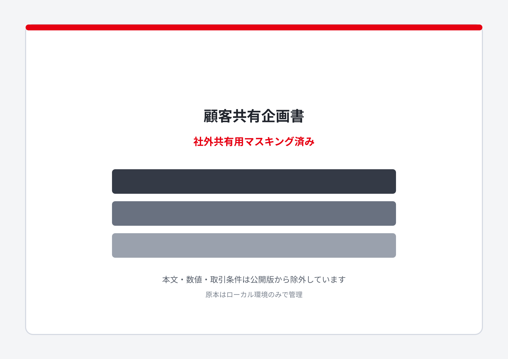
KPIの再構造化：獲得・リピート管理から、認知を含む売上接続モデルへ
実務論点は獲得・CPOに集中
新規客数は再設定
売上・粗利への寄与で統合
年度利益確保につながる最上位成果
3袋化前提で再設定
移行率・解約・次回売上
5万円目標／6万円停止
1袋モデルの実績から、3袋移行時のリスクと再設計範囲を特定する
現在は「1袋という低い購入ハードル」でも計画未達。ここで初回購入額が上がる3袋モデルへ移行するため、従来の件数計画をそのまま置くことは合理的ではない。
現行計画の獲得目標
達成率 68.0%
現行1袋モデル時点
目標件数に対し不足
現行課題
- チャットボット不具合、お盆抑制、新規媒体開始遅延
- 制作量は増えたが、勝ち筋への集中が弱く見える
- 9月1,345件計画の根拠が媒体増額・大量制作に寄る
- 想定CPO 2万円／2.5万円／3万円が資料内で混在
3袋移行で増える難易度
- 初回支払額が約2千円台から約1万円へ上昇
- 獲得CVR低下と新規客数減少の可能性
- 正式な次回継続評価まで約4か月
- 「売れた」だけでなく「続く顧客か」が重要になる
広告露出から事業成果までのKPI接続
研究機関発の認知
検討意向
Direct流入
LP訪問
CVR・CPO
3袋選択率
F2・継続率
1袋→3袋移行
累積粗利
顧客生涯価値
両者の衝突は、CRの良し悪しではなく「評価する時間軸の欠落」から起きている
旧KPIの正確な位置づけ
従来も新規獲得件数とリピート率の双方を確認していた。ただし、当時のリピート率は大きな課題として顕在化していなかったため、改善会議の論点から下がり、広告運用上は獲得件数・CPOの議論が中心になっていた。今回の課題はリピート率の新設ではなく、認知の中間指標がないまま、短期の獲得と中長期のリピートが直接対立したことにある。
これまで定められていなかったこと
- CRごとの停止・改善・昇格条件
- 最低出稿量と評価可能なサンプル条件
- 獲得した顧客のリピート率をCRへ戻す方法
- 広告露出が認知・想起へ与えた効果
- 短期CPOと中期リピートが衝突した場合の優先順位
田村様発言を扱う際の注意
「テクニカルなCRは継続につながらない」という問題提起は重要。ただし、会議時点ではCR別・流入別のリピート率が精査されておらず、強い問題意識に基づく仮説の段階。肯定も否定もせず、データで確認できる問いに変換する。
確認したい問い：免疫センターらしいCRは、一般的な便益CRと比べ、認知・獲得効率・継続率・累積売上のどこで優位になるか。
認知はキャンペーン単位、獲得はCR単位、継続は流入コホート単位で測る。
新しい広告評価：認知・獲得・継続／売上のKPI三角形
① 認知｜露出の価値
- 広告想起・助成／非助成認知
- 「研究機関発」想起率
- 比較検討意向・好意度
- 指名検索、Direct流入
- 接触者／非接触者の差分
② 獲得｜短期反応
- 新規客数・獲得件数
- CTR・CVR・CPO
- 3袋選択率
- 初回売上・入金率
- 1袋→3袋移行率
③ 継続・売上｜顧客品質
- 初期キャンセル率
- F2／次回配送移行率
- 90日・180日継続率
- コホート累積売上・粗利
- 予測LTV／実績LTV
因果を誤認しないための測定設計
認知
媒体のブランドリフト調査、または接触者／非接触者調査で測定。個別CR単位で母数が不足する場合は、訴求軸・キャンペーン単位で判定する。
獲得
CR ID、LP、オファーを一貫して計測し、配信量・ターゲット差を揃えた比較を行う。CPOだけでなく3袋選択まで追う。
継続・売上
購入データへCR／訴求軸IDを連携し、同一獲得月のコホートで比較。年齢・オファー・媒体の差を分けて評価する。
CRの継続・改善・停止条件（提案たたき台）
| 判定タイミング | 見る指標 | 継続・昇格 | 改善 | 停止 |
|---|---|---|---|---|
| 配信前 | ブランド適合・法務／薬機・計測設定 | 田村様承認軸を満たし、計測可能 | 表現・遷移・タグを修正 | ブランド核または法令基準を満たさない |
| 短期 配信初期 | 消化額、IMP、CTR、CVR、CPO | 比較対象に対して反応が成立し、CPO5万円以内を目指せる | CTR良／CVR悪はLP・オファー、CTR悪は入口を改修 | 最低評価量到達後も6万円超が継続し、改善仮説がない |
| 中期 30〜90日 | 3袋選択、入金、初期キャンセル、継続意向 | 獲得効率と顧客品質が基準以上 | CPO良／品質悪は期待形成・訴求を修正 | 初期キャンセル等が対照群より明確に悪化 |
| 長期 F2以降 | リピート率、累積売上、粗利、LTV | 売上・粗利への寄与が確認できる | セグメント・CRM・オファーを再設計 | 十分な母数で、獲得差を含めても事業価値が劣後 |
| 定点 月次／四半期 | 広告想起、認知、指名検索、検討意向 | 認知リフトが売上指標へ接続 | 想起内容が意図と異なる場合は翻訳を修正 | 露出しても認知差がなく、獲得・売上にも寄与しない |
重要：リピート率はCR以外に商品体験、価格、配送、CRM、顧客属性の影響を受ける。CR単独の責任と断定せず、コホート比較と統制可能な差分で判断する。停止条件の具体数値は、媒体・予算・CV母数を確認後に確定する。
田村様が承認したCR軸を「希望するブランド表現」として定義する
録画・提案時の承認内容から、田村様の要望は「ブランド感のある見た目」ではなく、獲得する顧客の理由まで免疫センターらしくしたい、という経営要望として捉える。
田村様が「こういうCRが良い」とした軸
- 研究機関としての信頼・権威が伝わる
- 免疫分析研究センターだから選ぶ理由がある
- 機能性や設計思想が伝わる
- 続けて飲み、健康になってもらう文脈がある
- 他社売れ筋の横滑りではなく、独自性がある
避けたいと受け取れる軸
- 他社でも成立する横並び表現
- クリック獲得だけを狙うテクニカルな広告
- 何も伝わらない大量差分
- 新規獲得と2回目購入が分断された設計
- 「らしさ」を後付けしただけの便益訴求
会議で田村様が方向性を肯定したCR案
提案書40ページに掲載されたCR群から、PDF内の元画像を抽出。会議時点の田村様発言と対応づけ、今後のブランド基準を具体化する参照例として扱う。
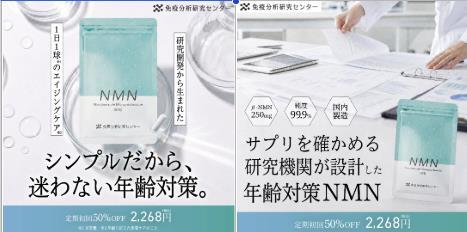
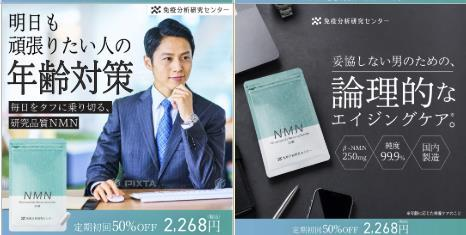
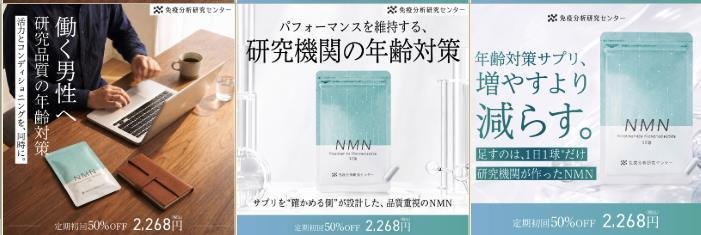
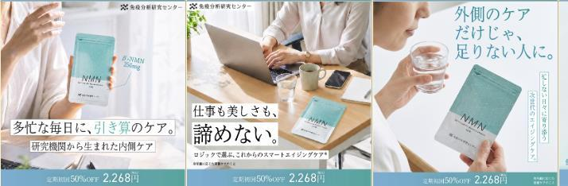
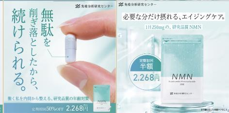
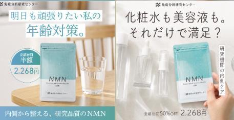
注：資料上では「免疫センター様確認中」と記載されているが、本整理では会議中の田村様による肯定的発言を踏まえ、方向性の承認例として位置づける。最終提案前に該当CRの認識をチーム内で再確認する。
「良い感じにディレクションしてほしい」を、実行可能な共同運用へ変える
体制の現状／改善後
現状｜各社・各担当が個別に動く
情報・判断・顧客文脈が分散し、山下が個別調整でつなぐ
改善後｜顧客仮説から実行までを接続
ブランドの中にある知見と、外部チームの翻訳・改善能力を組み合わせる
ブランド仮説は得意先と共に作り、実務者が直接聞いて表現と改善計画へ翻訳する。上田様とのMTGには、論点に関係する制作・デザイン・Paidの領域から最低1名が参加。完成コピーではなく、顧客の声・商品の意図・社内の気づきを受け取る。
上田様の知見を、ブランド成長に接続する循環
1｜事実
最近、顧客や社内からどんな声があったか。
2｜仮説
なぜそう感じるのか。次に何を確かめたいか。
3｜ブランド意図
免疫センターとして、何を正しく伝えたいか。
上田様への依頼は、1回5〜10分で答えられるこの3問まで。必要に応じて上田様を窓口に得意先内の知見も集め、コピー作成と反応確認設計はインナーチームが担う。
ただし、「らしさ」の範囲で獲得と継続を両立するには、判定基準・改善裁量・計測環境が必要。個人の能力ではなく、条件整備の課題として解く。
提案責任者が感じている「もやもや」の正体
裁量と成果期待のずれ
表現の裁量は限定される一方、獲得・継続への寄与まで期待される。売上は商品・価格・配送・CRMを含む合成結果として扱う。
「らしさ」が事前基準になっていない
提出後の「合う／違う」では知見が残らない。制作前に必須・推奨・禁止を共有する。
CR別継続を測れない
「らしさは継続に効くか」を確認できず、両論が仮説のまま残っている。
数字の共有に時間差がある
MDとONE社の把握時点・定義がずれ、確認工数と判断の遅れが生じる。
成果要求を成立させる3条件
表現自由度を狭くすること自体は可能。ただしその場合、成果の確実性を下げる／反応確認期間を延ばす／計測精度を上げるのいずれかが必要になる。自由度・期間・計測をすべて制限したまま成果だけを固定することはできない。
社外・社内・共通課題の関係図
得意先
MD・ONE社
計測環境
現状：提案とお戻しを繰り返しても、正解が蓄積しない
現在はデザイン初稿を出してから、免疫センター側が「合っている／違う」を返す流れ。提案された側は完成物に対して二択で答えるしかなく、Do領域が狭いほど提案数と手戻りが増える。修正しても「次回の正解」をチーム資産にできない。
CR提案フロー：顧客仮説から始め、デザイン前に合意する
あるべき全体運用：CRを出す前に「勝てる範囲」と判定方法を共同定義する
変えるべきコミュニケーション
- 「良い感じに」ではなく、承認CRから判定項目を5〜7個にする
- 完成CRのお戻しではなく、企画段階で「ブランド適合／要修正／配信対象外」を判定する
- FBは「違う」で止めず、どの基準に抵触したかを記録する
- CR台帳に仮説・変更点・承認理由・数値結果を残す
変えるべきデータ運用
- MD・ONE社で日次の共通ダッシュボードと数値定義表を持つ
- 速報値の更新時刻、確定値の締め時刻、差異修正の責任者を決める
- アドエビスの広告接触IDと受注・顧客IDを接続する
- CR別F2・F3は観測可能になるまで「未確認」と明記する
管理画面共有は、Paid予算を維持するための提案前提
チーム共通の運営原則
Paidとモールのどちらかを優先するのではなく、全体売上への貢献でチャネルを判断する。そのうえでPaid予算を維持・拡大するには、関係者が同じ事実を同じタイミングで確認し、改善判断と顧客説明を迅速かつ正確に行える状態をつくる。
権限管理と全体最適を両立する
アカウント管理、責任分界、誤操作防止を守りながら、分析に必要な可視性も確保する。操作権限は運用責任者が保持し、閲覧・分析は必要最小限の権限または同等の自動共有で補う、という役割分離を基本とする。
全体週次定例会を動かさずに組む、ベストな一週間
火曜15時の全体週次定例会は固定する。その1時間前のインナーCRを「案を考え始める場」にせず、前週の顧客判断を水〜金で企画・制作へ落とし、月曜に数字と顧客への伝え方を固め、火曜14時に最終確認を行う。
読む順序は水曜起点。火曜の顧客判断を終点ではなく、次週の仮説入力として水曜へ戻す。
4つの会議体と決定ログの役割を混ぜない
このフローの成立条件
- 仮説会には、議題に関係する制作・デザイン・Paidから最低1名が参加する
- 上田様に完成案を求めず、得意先が持つ事実と見立てを起点にする
- 月曜会の前にONE社とMDの数字を一致させる
- 顧客FBは即日、判定基準と担当タスクへ変換する
避けるべき運営
- 火曜14時からCRの方向性を考え始める
- 月曜会で管理画面の数字を初めて照合する
- 全体定例を各社の長い進捗報告で終える
- 「持ち帰ります」だけで担当・期限・判断条件を残さない
火曜15時は意思決定、水曜の仮説会は次の問いづくり。得意先の知見と市場結果を毎週つなぐ。全体定例の時間は変えず、初期8週のみ30分の共同仮説会を加える。安定後は隔週化し、会議負荷を抑える。
ブラッシュアップした「べき論」
役割と責任の線引き
| 主体 | 決めること | 毎回出すもの | 背負わないもの |
|---|---|---|---|
| 上田様 （得意先メイン担当） | 顧客・商品仮説の素材、社内事実、ブランドの意図 | 次に試したい仮説または気づきを1つ | 完成コピーの作成、広告運用の専門判断 |
| 実務代表 （制作・デザイン・Paid） | 論点に応じて各領域から最低1名が意思決定経路に参加 | 上田様の意図に対する実装上の問い・制約・仮説 | 非参加者への伝言だけによる意図の復元 |
| 得意先 | ブランドの必須・禁止条件、経営KPIの優先順位 | 判定基準に基づく理由付き承認・FB | 媒体運用や制作の実務 |
| 博報堂チーム＋MD山下 | 事業・ブランド・Paid・モールをつなぐ統合提案方針 | 意思決定論点、KPIの上下関係、顧客合意事項 | 基準・データがないままの成果保証 |
| 石川 （MD PMO） | 山下の方針を現場へ接続し、進行・論点・品質・期限を統合管理 | 決定ログ、統合ブリーフ、進捗・未決事項、火曜資料の素案 | 経営・ブランド方針の単独変更 |
| 渡邉 （Paidディレクション） | ONE社と連携したPaidの数値解釈、改善、予算・停止・増額案 | 媒体・CR別分析、異常値、改善案、判断材料 | データアクセスがない状態での即時判断 |
| MD実行組織 | 翻訳仮説、CR構成、制作、反応確認と改善案 | 仮説付きCR、結果解釈、次の打ち手 | 計測不能な継続成果の単独保証 |
| ONE社 | 配信設計、操作権限、運用判断、数値の一次把握 | 閲覧環境、定刻の媒体・CR別データ、異常値と対応履歴 | ブランド定義や事業KPIの単独判断 |
上田様の知見を起点に、チームで仮説を表現化し、市場結果から次の仮説を共に学ぶ。得意先に制作実務を求めず、代理店も単独で正解を作ると約束しない。売上目標は、判断と実行の質でアシストする。
「らしさ」を3Cで定義し、市場へ浸透させる
自社の真実 × 顧客にとっての意味 × 競合に対する独自性が重なる、継続的に占有したい選択理由である。
3Cから「免疫分析研究センターらしさ」を定義する構造
外部調査を踏まえた3Cの再整理
市場で「研究品質」は、何として認識されているか
見える品質
楽天上位商品では、純度99.9〜100％、含有量、日本製・国内製造、GMP、第三者分析、臨床試験など、比較できる記号が商品名と画像に並ぶ。
借りる信頼
大正製薬は製薬会社の品質管理、P3は開発者と多成分、他商品は医師・薬剤師監修やランキング実績で安心を補強する。
免疫センターの余白
スペックを大きく言うだけでなく、「何を、なぜ確かめ、その結果どう商品へ反映したか」を選択基準として見せられる。
生活者が一目で比べられる品質記号と、その記号を選んだ理由が結びついた状態。したがって、らしさは「研究しています」ではなく、選定基準・確認行為・商品への反映の順で翻訳する。
競合の戦い方と、真似るべきこと・真似るべきでないこと
| ブランド | 市場での主戦法 | 広告・リリースの内容 | 学ぶこと | 正面衝突しないこと |
|---|---|---|---|---|
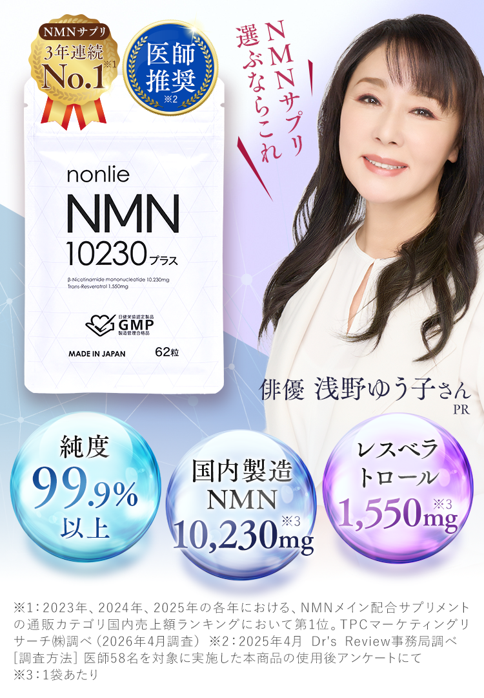 nonlie | 高含有×証明×価値×低リスク | 330mg/日、含有証明、GMP、医師・顧客の声、初回価格、回数縛りなしを長尺LPで強化。 | 不安を1つずつ解消する証拠階層と解約リスクの低減。 | 含有量・最安値だけの競争。 |
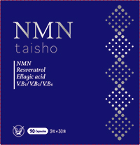 大正製薬 | 大手製薬の信頼×高価格プレミアム | NMN 250mg/日、複数の補助成分、個包装、「大正製薬の品質」を強調。 | 組織の信頼を品質保証に翻訳する一貫性。インフルエンサー等の依頼表示は明確化する。 | 企業名の知名度や高価格感だけの競争。 |
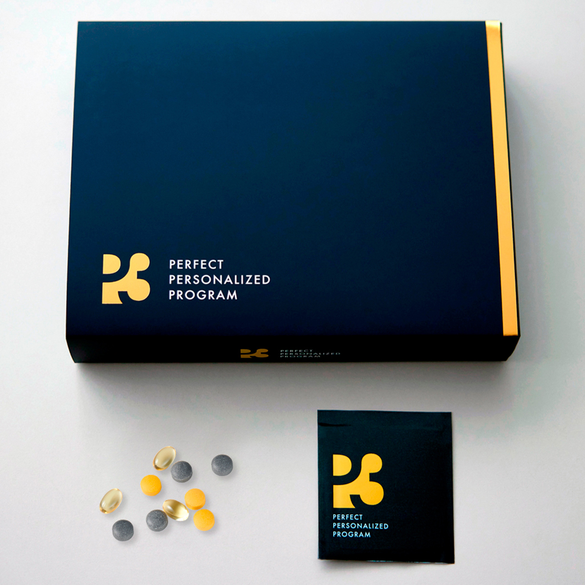 P3 | 著名人ストーリー×多成分×大量認知 | 2026年にNMN 500mg・55種類へ刷新。交通広告、タクシー、TV、雑誌、アンバサダーを連続投入。 | 商品更新・人・媒体を連続ニュース化し、想起を積み上げる運用。 | 著名人量、露出量、成分数の派手さ。 |
免疫分析研究センター | 評価機関の知見×簡潔な一粒×継続設計 | 「細胞に答えがある」、1日1粒、250mg。現行広告では商品特性×オファー、測定キット×商品が好調。 | 自社の分析・臨床評価プロセスを、生活者が見て判断できる証拠にする。 | 「研究」と言うだけで必要性・安心・購入理由を省略すること。 |
競合パッケージ画像は各社の公式情報から引用。免疫分析研究センターは現行配信CR内の商品画像を使用。比較理解のため小型表示。
勝ち筋は「競合より大きく言う」ではなく、戦う軸をずらす
現在の施策に足すべき「不足パーツ」
今週決める
MD整理
今週決める
今週決める
投入前
投入前
投入前
30〜90日
ニーズ最大化と「らしさ」は同じではない
「らしさ」が売上へ効くまでには、浸透の中間工程がある
単発CRのCPOだけで「らしさ」を評価すると、浸透前のブランド表現を早期に止める危険がある。一方、浸透を理由に成果不問で出し続けるのも誤り。短期の広告反応と、中期の認知・連想形成を別々に測り、最終的に売上との接続を見る必要がある。
3Cと浸透を判断可能にする論点
| 論点 | 確認する問い | 測るもの | 判断 |
|---|---|---|---|
| 顧客との接点 | 研究機関という価値は、誰のどんな不安・選択課題に効くか | 訴求別CTR・CVR、定性反応、購入理由 | 入口表現を改善する |
| 競合との差 | 競合も同じことを言える表現になっていないか | 競合CR、ブランド識別率、自由回答の想起内容 | 独自記号・言葉を固定する |
| 自社の真実 | その約束を事実・商品・組織姿勢で裏付けられるか | 表示根拠、商品事実、ブランド適合判定 | 固定する核を決める |
| 浸透 | 露出により「研究品質のブランド」という記憶が増えたか | 認知率、広告想起、ブランド連想、指名検索 | 一定期間は一貫露出する |
| 事業接続 | 認知・連想の高まりが獲得と継続へつながったか | 新規客数、CPO、3袋選択、F2・F3、LTV | 増額・改善・停止を決める |
固定して浸透させるもの
- 研究・分析を起点とする選択姿勢
- 根拠を大切にする誠実な語り口
- 免疫分析研究センターだと識別できる記号
- 「研究品質を毎日の習慣へ」という一貫した意味
市場に合わせて変えるもの
- 対象者と生活課題の入口
- 年齢対策・選び方・継続などの便益
- 人物、商品、研究表現の構成比
- 1袋／3袋のオファー提示順序
「らしさ」を守り、翻訳を磨く3階層
研究機関発／継続設計／誠実さ
誰の、どんな生活価値になるか
購買／3袋選択／継続予兆
ブランドの核
全案に必須。ブランド審査で判定し、基準外は数値にかかわらず拡大しない。
便益への翻訳
将来の健康、日々のコンディション、根拠で選ぶ、3か月の健康習慣など。
レスポンスの入口
問いかけ、生活場面、商品、研究者、継続者の声、アンケート形式など。
「らしさを一つの表現に閉じず、売れる翻訳を探索する」。
9月中旬から準備し、10月5日週の3袋切り替えへ段階移行する
現状案｜現行9月計画
- 全期間を現行1袋オファー中心で運用
- 予算：3,265.5万円
- 目標獲得：1,345件
- 計画CPO：24,281円
- 9月15日以降も勝ちCRへの増額を想定
修正案｜3袋段階導入
- 9月1〜14日：1袋で既存計画を維持
- 9月15〜21日：3袋へ週予算の20%
- 9月22〜30日：条件達成時に3袋へ40%
- 3袋予算：618.5万円
- 3袋目標：124件（CPO5万円）
現状案／修正案ともに同額
9/1〜30の合計
9/15〜30の限定運用
混合CPO 約2.68万円
| 期間 | 総予算 | 1袋配分／目標 | 3袋配分／目標 | 判断 |
|---|---|---|---|---|
| 9/1〜9/14 | 1,298.5万円 | 100%／539件 現行計画を維持 | 0円／0件 制作・計測準備 | 承認CR、LP、フォーム、計測IDを完成 |
| 9/15〜9/21 | 841.4万円 | 80%：673.1万円／約277件 | 20%：168.3万円／約34件 | CPO5万円、6万円停止、3袋選択・初期キャンセルを確認 |
| 9/22〜9/30 | 1,125.6万円 | 60%：675.4万円／約278件 | 40%：450.2万円／約90件 | 前週条件を満たした場合のみ40%へ増額 |
| 9月合計 | 3,265.5万円 | 約1,094件 | 約124件 | 合計約1,218件／混合CPO約26,800円 |
売値から見たKPIアイデア
入口KPI
3袋初回9,796円、CPO5万円の場合、広告費回収倍率は初回売上ベースで約0.20倍。入口だけでは回収せず、継続売上を前提に評価する。
必要件数
3袋予算618.5万円 ÷ 目標CPO5万円 ＝ 約124件。限界CPO6万円なら約103件が最低目安。
9月初回売上
1袋初回2,268円、3袋初回9,796円と仮定すると、修正案は約370万円。現状案約305万円に対し約65万円増。
3袋予算を40%へ上げる条件
CPO
目標5万円以内、または改善傾向が明確
顧客行動
3袋選択・入金・初期キャンセルが想定範囲
ブランド
研究機関発の想起・検討意向に悪化がない
停止条件
最低評価量到達後もCPO6万円超、または品質指標が対照群より悪化
3袋を新規入口に置くための比較アクション
A｜3袋直接
新規客に3袋を主導線で提示。CVR、CPO、初期キャンセル、4か月目移行を見る。
B｜1袋入口
未体験層の購入障壁を下げ、満足・継続意向とその後の3袋移行率を見る。
C｜購入後移行
摂取開始後に経済メリットを提示。実感・満足が3袋選択の先行条件かを確かめる。
比較時は、新規・既存、購入回数、年齢、過去の継続期間を分ける。既存3袋層のLTVだけで増額せず、A〜Cの新規コホートで入口の妥当性を判断する。
試算上の注意：1袋CPOは現行9月計画値を使用。3袋のCVR、粗利、継続率は未確定。初回売上は広告費回収を意味しない。正式提案では、3袋LTVの「オファー効果」と「高継続層の自己選択」を切り分けて損益を再計算する。
田村様承認軸を核に、3袋を買う理由へ翻訳する
「研究機関発」だけで信頼を期待せず、研究品質の中身を生活者が比較できる言葉へ変え、その後に3袋の価格・利便性を提示する。
「免疫分析研究センターらしさ」を言葉にしたCRコピー案
らしさを社名の掲出だけで終わらせず、研究する姿勢・根拠を重んじる誠実さ・毎日続けられる設計として生活者の選択理由へ翻訳する。以下を初回提案の具体案とする。
本命｜研究姿勢を便益化
年齢に、思いつきではなく研究を。
免疫分析研究センター発。根拠を大切にする人の、1日1粒・3か月習慣。
信頼｜選ぶ基準を提示
からだに入れるものだから、研究品質という選択を。
純度99.9％のNMNを、毎日続けやすい1粒に。3か月分を一度に。
継続｜誠実な習慣設計
続けるものに、研究機関の誠実さを。
派手な約束より、毎日の積み重ね。研究機関発のNMN習慣。
| 使用場面 | 具体コピー案 | 表現の狙い |
|---|---|---|
| バナー・第一訴求 | 年齢に、思いつきではなく研究を。 | 短く止めながら、研究機関らしい判断姿勢を伝える |
| バナー・品質訴求 | 選ぶ基準は、話題より根拠。 | 流行訴求と距離を置き、ブランドの誠実さを際立たせる |
| バナー・商品訴求 | 研究品質を、毎日の一粒に。 | 研究という抽象価値を、摂取行動まで具体化する |
| 3袋オファー | 確かな一つを、まず3か月。 | 「増やすより減らす」の承認軸と3袋購入を接続する |
| LP見出し | サプリを分析してきた私たちが、続けたい一粒を考えました。 | センターの専門性を、開発者の責任ある言葉として伝える |
| ブランド署名 | 測る。確かめる。だから、届けられる。 | 分析研究機関ならではの行為を、記憶に残るリズムで表す |
コピー改善候補
| 翻訳軸 | メインコピー | サブコピー | 確認したい反応 |
|---|---|---|---|
| 研究信頼 | 研究機関が、続ける前提で設計したNMN。 | 1日1粒。3か月分を一度に。 | 研究機関発が高単価の納得を作るか |
| 継続習慣 | 明日のために、3か月の健康習慣。 | 無理なく続ける、研究品質の年齢対策。 | 生活便益が3袋選択を高めるか |
| 選び抜く | サプリを増やすより、確かな一つを。 | サプリを確かめる側が設計しました。 | 独自性とCVRを両立できるか |
| 価格・利便 | 続けるなら、3か月分をもっと合理的に。 | 17%OFF／受け取りは3か月に1回。 | 価格・配送便益が最後の後押しになるか |
| 選択分岐 | まず1袋。しっかり3か月。 | あなたに合った始め方を選べます。 | 併売で全体CVRを守れるか |
バナーの基本構成
表現上の注意：健康食品のため、3か月で特定の効果が得られると断定しない。「研究機関発」「純度99.9%」「1日1粒」「価格」等は最新の表示根拠と薬機・景表法審査を通過した情報のみ使用する。
顧客にとってのBetterとBest
顧客提示時は「プランA：ブランド集中型」「プランB：ブランド起点・段階改善型」と呼称。Better／Bestはチーム内の位置づけとする。
- 田村様が承認した表現に制作・配信を集中
- ブランド適合外の既存CRを停止
- 研究機関／3か月継続／継続者価値の3軸に限定
- 短期の社内合意とブランド整合を優先
成立条件
獲得件数・CPO低下リスクを双方で認識し、未達時に表現方針も再検討できること。
- 全CRに田村様承認のブランド核を必須化
- 生活者便益への翻訳と入口表現を複数案で段階改善
- 70%本命／20%翻訳テスト／10%探索を目安に配分
- ブランド審査と事業評価の二段階で判断
成立条件
ブランドの核と可変領域を事前合意し、結果に基づく昇格・停止ルールを認めてもらうこと。
| 比較軸 | プランA：ブランド集中型 | プランB：ブランド起点・段階改善型 |
|---|---|---|
| 顧客要望との一致 | 最も高い | 高い。核は全案共通 |
| 獲得可能性 | 当該表現が当たることに依存 | ブランド内で勝ち翻訳を探索 |
| 学習量 | 限定的 | 比較可能で高い |
| 未達時の説明 | 原因分解が難しい | 入口／翻訳／LP／オファーに分解 |
| 推奨用途 | 短期的な収束・信頼回復 | 売上・ブランド・継続の同時最適 |
田村様の希望軸から、売れる翻訳へ進む道程
二段階での継続判断
判定 1｜ブランド適合
研究機関発、継続設計、誠実性を満たすか。満たさない案は、CPAが良くても主戦略へ昇格しない。
判定 2｜事業成果
CPO、獲得数、3袋選択率、初期キャンセル、継続予兆を確認。良い翻訳へ予算を集中する。
現行提案からの組み替え
「媒体を増やす・本数を増やす」計画から、「ブランド仮説を絞り、3袋への移行経路を段階運用で見極める」計画へ。
定義と再計算
- 田村様承認CRを棚卸し
- ブランド核／可変領域を定義
- 継続顧客の属性・理由分析
- 売上から獲得数・許容CPOを逆算
移行経路を比較
- A：3袋直接販売
- B：3袋推奨＋1袋補助
- C：1袋獲得後3袋移行
- Meta中心に限定配信
勝ち翻訳へ集中
- ブランド×便益別に評価
- 同梱・CRMまで接続
- 高継続見込み層を特定
- 低効率セルを停止
投資配分を確定
- コホート別売上予測
- 直接獲得／移行の比率確定
- 年間計画を再予測
- 4か月目評価条件を合意
4か月待たずに見る先行指標
入口
CTR／LP遷移／読了率
購入
CVR／CPO／3袋選択率
初期健全性
入金率／キャンセル／問い合わせ
継続予兆
飲用開始／CRM反応／継続意向
10月5日週の開始から逆算し、判断と制作を並行させる
商品条件が決まるまで制作を止めるのではなく、変更に弱い部分は確定後、変更に強い仮説・構成・計測設計は先行する。赤枠の判断日までに開始条件が揃わない場合は、全面開始ではなく限定テストへ切り替える。
日程は8月25日定例で共有された「9月中に制作完了、10月5日週から切り替え」を基準にした案。正式な開始日と審査リードタイム確定後、担当者名入り工程表へ更新する。
予定通り開始
商品・計測・制作・審査が揃えば、Best案で3袋を主導線として開始する。
一部未整備
計測等が一部残る場合は、予算・媒体・CR本数を限定して学習を始める。
重要条件が未確定
価格、受注、在庫、法務の重要条件が欠ける場合は、開始日を再設定する。
博報堂×マテリアルデジタルで先に合意したい論点
回答によって変わる、来週定例の提案シナリオ
来週の提案を先に一つへ固定しない。今週、以下4つの分岐条件を確認し、その回答の組み合わせで提案の深さ・予算・実装範囲をA〜Dへ切り替える。
合意できる → A／B／Cへ
未合意 → D「前提整備」へ
整備済み → AまたはCへ
一部未整備 → Bへ／見通しなし → Dへ
開始可能 → A／B／Cへ
重要条件が未確定 → Dへ
改善可能 → AまたはBへ
承認表現のみに限定 → Cへ
3袋を主導線にし、承認済みブランド核の内側で複数翻訳をCPO上限内で比較。Paid予算と90日計画まで意思決定を求める。
- 持参：判定表、CRコピー・構成、メディア配分、KPI・停止条件、制作工程
- 顧客に決めてもらう：ブランド核、対象範囲、予算、開始日
- 定例後：即制作・実装へ移行
ローンチは止めず、予算・媒体・CR本数を限定。管理画面共有とID接続に期限を置き、未観測の継続で早期停止しない。
- 持参：限定テスト案、暫定KPI、計測整備ロードマップ
- 顧客に決めてもらう：限定予算、代替指標、環境整備期限
- 分岐：期限内に整えばAへ／整わなければ投資据え置き
田村様の希望表現を狭く採用し、獲得件数の確度低下を前提に予算を保守化。ブランド浸透と短期獲得を別評価する。
- 持参：承認軸のみのCR、保守的件数・CPOシナリオ、認知測定案
- 顧客に決めてもらう：成果変動の許容幅、評価期間、予算上限
- 分岐：反応が不足すれば翻訳範囲の再協議へ
不確定な価格・日程・フォーム・利益条件のままCRと予算を確定しない。来週は不足前提と決定期限を合意する。
- 持参：未決事項一覧、責任者、期限、仮置きの複数試算
- 顧客に決めてもらう：商品条件、正式開始日、判断責任者
- 定例後：前提確定後にA〜Cを選び直す
第一推奨はシナリオA。ただし、今週の回答が揃わなければ無理に一案を通さず、B・C・Dへ明示的に分岐する。どのシナリオでも、「何が不足しているため、この提案範囲になるのか」を顧客と共有する。
直近ネクストアクション
今週｜不足パーツの収集
継続顧客属性・満足・購入履歴・解約理由を収集し、3袋のLTV差を「オファー効果」と「高継続層の自己選択」に分けて確認する。あわせて、顧客・ブランド仮説会の参加者、初回議題、仮説カード様式を確定する。
今週｜3袋制作スケジュール
オファー・CR・記事／アンケートLP・商品LP・フォーム・CRM／同梱物について、要件確定、制作、審査、実装、配信開始までのクリティカルパスを組み立てる。
来週定例｜回答に応じた方針提案
4つの分岐条件への回答からA〜Dを選び、経営背景とKPI変更、承認CR、翻訳改善、予算、90日プランのうち、その時点で決められる範囲を提示する。
「3袋化によって今年度の売上・利益を達成するために、免疫分析研究センターらしさを、すべてのCRに通底するブランドの核として明確に定義します。その核は変えず、生活者が自分事として理解し、購入・継続できる入口、便益、見せ方を、合意したCPO上限と停止条件のもとで段階的に磨きます。認知・獲得・継続を同じ評価体系で定点観測し、結果をともに学びながら、“免疫分析研究センターだから選ばれ、売上と継続につながる勝ち方”を共同で確立したいと考えています。」 伝えるべき姿勢：ブランドか売上かを選ぶのではなく、ブランドの独自性が売上・継続へつながる道筋を、計測可能な形で一緒につくる。